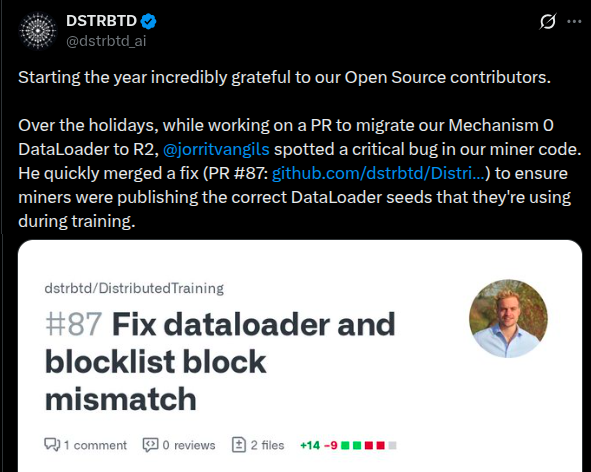
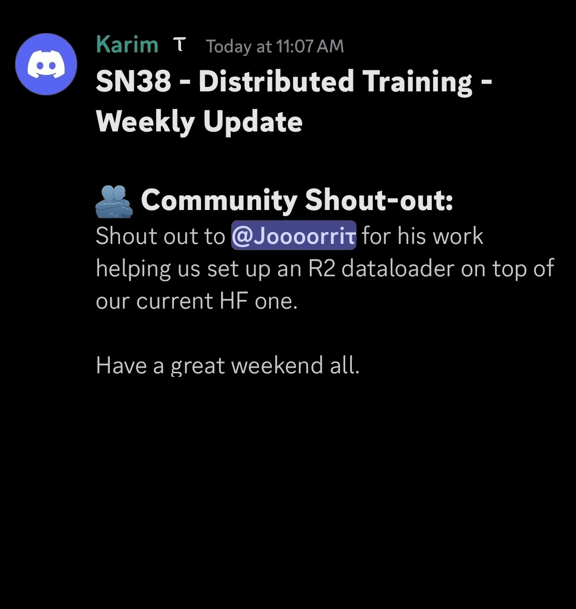

From 2024-2026, I have been contributing to Bittensor, a decentralized network that incentivizes AI development.
Living for 2 years as a digital nomad, my programming skills accelerated significantly through active participation in several subnets,
including Image Inference and Data Scraping.


I found my niche in distributed LLM training, collaborating with a global team to train a single, large language model.
My contributions extended beyond providing GPU compute to
direct code contributions to the core repository. This involved deepening my understanding of complex NLP concepts and
implementing system improvements, including experimenting with different optimizer implementations and engineering a new, more efficient dataloader.